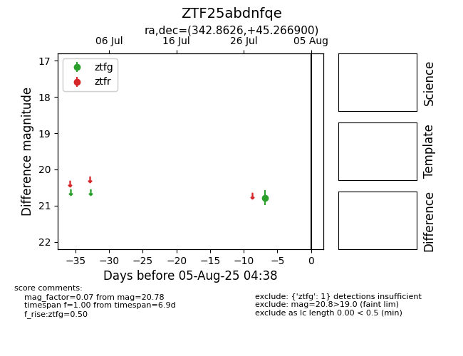

Target ZTF25abdnfqe at 2025-08-05 04:38, see:
FINK: fink-portal.org/ZTF25abdnfqe
Lasair: lasair-ztf.lsst.ac.uk/objects/ZTF25abdnfqe
ALeRCE: alerce.online/object/ZTF25abdnfqe
alt names
ZTF25abdnfqe (ztf,fink)
coordinates:
equatorial (ra, dec) = (342.8626,+45.26690)
galactic (l, b) = (101.7957,-12.62382)
photometry
last ztfg=20.78
1 ztfg detections
